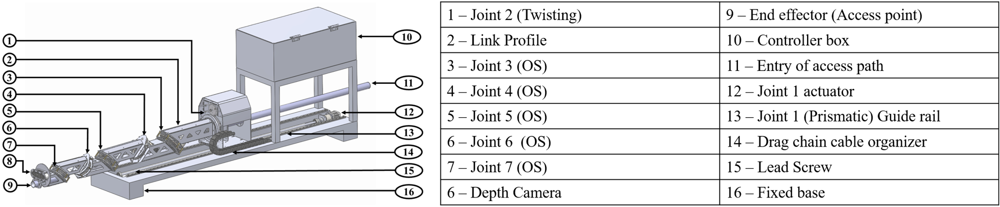
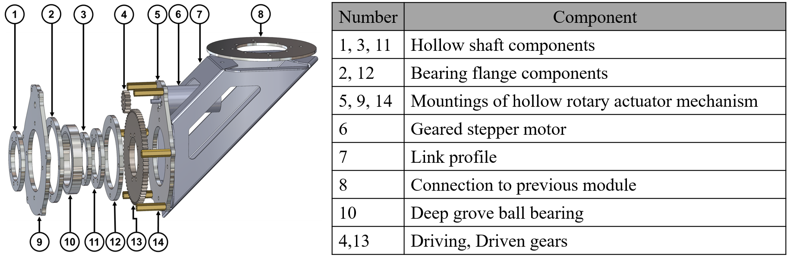
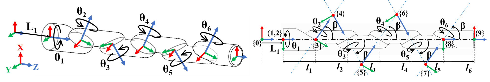
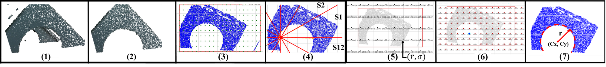
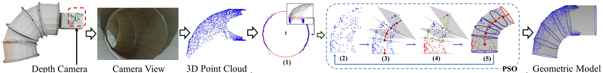
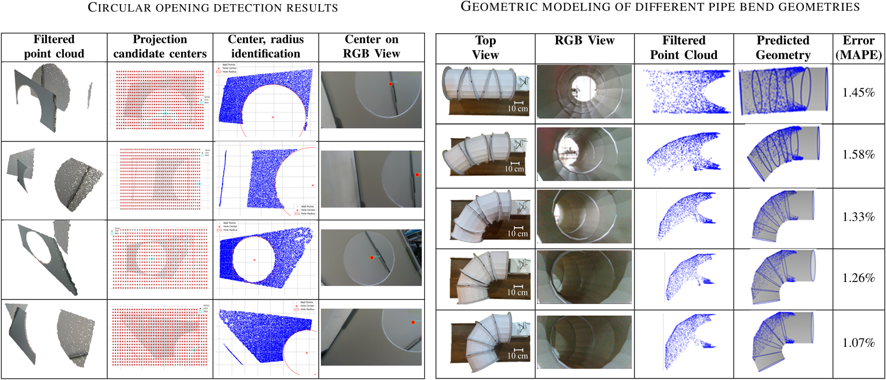
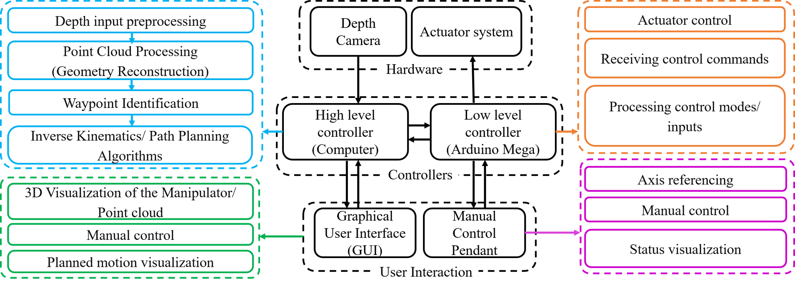

Vision-based redundant robotic manipulator for accessing confined spaces
Accessing confined and restricted spaces—such as storage tanks, process vessels, and aircraft wings—presents significant safety hazards and operational challenges for human workers due to limited entry points and poor ventilation. To address these challenges, we developed VORAC: a modular redundant robotic manipulator tailored to navigate unstructured, tight environments.
Unlike traditional drone or crawler systems, VORAC is designed to provide high precision, repeatability, and extended operational periods. Crucially, the system features a unique internal tubular access path, allowing operators to safely deliver necessary utilities—such as cleaning water jets, maintenance welding torches, or inspection tools—directly from the base to the end-effector (EE) inside the confined space.
System Overview & Hardware Prototype

The VORAC manipulator was built as a reconfigurable, modular system. The prototype was developed to have an approximate reach of 1 meter and an inner access path diameter of 30 mm to accommodate various payload utilities, while maintaining a slim outer profile of less than 10 cm. The structural links were fabricated from 1 mm laser-cut aluminum sheets folded into irregular pentagon cross-sections to ensure a lightweight but robust assembly capable of handling a 500 g payload at the end-effector.

To actuate the modular links without obstructing the internal passageway, custom hollow rotary actuators were engineered. These mechanisms utilize planetary geared stepper motors integrated with thin-section deep-groove ball bearings. This specific bearing choice allowed the system to handle multi-directional loads while keeping mass minimal. The fixed base utilizes a prismatic joint driven by a lead screw and stepper motor set on parallel guide rails to smoothly translate the entire manipulator into the workspace.
Kinematic Architecture & Path Planning

The manipulator features a 7 Degree-of-Freedom (DOF) configuration, designed specifically to maneuver through highly constrained entry points. The kinematic chain consists of:
- One prismatic joint that translates the robot straight into the confined space.
- One initial twisting joint.
- Five Oblique Swivel (OS) joints, which are rotational joints set at a 45-degree inclined angle with alternating orientations to produce complex twisting motions.
Due to the constrained nature of the environment, computing the inverse kinematics (determining how to angle each joint to reach a target) requires collision avoidance. To achieve this, the system relies on a Particle Swarm Optimization (PSO) based path planning algorithm. The algorithm computes the required joint sequences by optimizing the manipulator's shape to fit along a safe, predetermined Bezier curve. During operation, the OS joints are strategically kept inactive until they have fully passed through the narrow entry point to prevent structural collisions.
Vision System & Environmental Perception
Navigation relies heavily on environmental perception, achieved through an RGB-D (depth) camera mounted directly at the end-effector. This allows the robot to acquire dense 3D point cloud data even in poorly lit environments. To guide the path planning algorithms, two specific vision-based geometric modeling pipelines were developed:
1. Circular Opening Detection Methodology

- Circular Opening Detection: Used to navigate through internal planar walls (such as aircraft fuel tank baffles). The algorithm isolates the nearest wall using RANSAC plane-fitting, projects the data into 2D, and uses a grid-based circularity search to calculate the exact center of the opening to use as a navigation waypoint.
2. Pipe Bend Geometric Modeling Methodology

- Pipe Bend Geometric Modeling: Used to navigate curved tubular ducts. A PSO-based algorithm fits a sequence of geometric units to the acquired point cloud to recreate the internal geometry of the pipe.
3. Feature Extraction Results

Tests showed the circular opening algorithm computes the mean radius with an average accuracy of 94%. Experimental validation across varying bend conditions demonstrated highly accurate modeling with only a 1-2% Mean Absolute Percentage Error (MAPE).
Control Architecture & Experimental Validation

The system utilizes a dual-controller hierarchy to manage the complex computational loads. A PC acts as the high-level controller, processing point cloud data from the depth camera, calculating the PSO path planning, and providing a Graphical User Interface (GUI) where operators can simulate the planned motion before execution. An Arduino Mega serves as the low-level controller, receiving serial commands from the PC to drive the individual actuators. The robot supports fully autonomous vision-based navigation, semi-autonomous sequential waypoint navigation, and direct manual control.
During final experimental validation, the end-to-end vision and navigation pipeline was tested on the physical prototype in an emulated confined space. The system successfully tracked its reference spline trajectory with an average end-effector deviation of just 0.72 cm in simulation, and 2.24 cm during live physical execution.